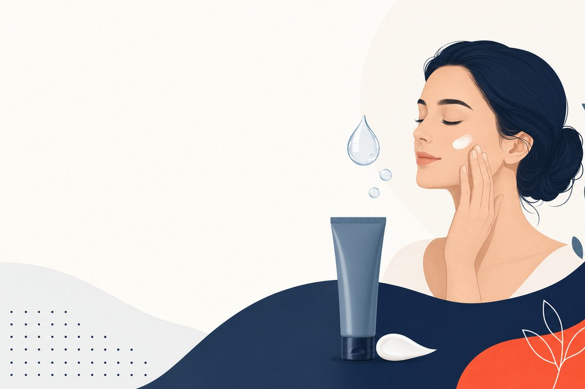

Key Takeaways
- Around 31.6 million people in the U.S. (roughly 10%) have some form of eczema.[1] Loss-of-function mutations in the filaggrin gene, which weaken the skin barrier, are carried by up to 10% of people and are a strong genetic risk factor for atopic eczema.[3]
- The 2025 AAD focused update added strong recommendations for four therapies in adults: tapinarof cream, roflumilast cream, lebrikizumab, and nemolizumab (used with topical therapy).[5]
- Treatment follows a step-up ladder: moisturizers and trigger avoidance first, then topical anti-inflammatories, then phototherapy or systemic therapy (biologics, oral JAK inhibitors) for disease that topicals do not control.[6][7]
- Eczema is linked with mental health: in a meta-analysis, adults with atopic dermatitis had about twice the odds of depression and of anxiety, and children had higher odds of depression.[21]
- Eczema herpeticum (herpes simplex infection of eczematous skin) can cause life-threatening complications. Seek care right away for clusters of uniform blisters or "punched-out" sores on eczema.[22][23]

In clinical practice, one of the most common misconceptions I encounter is that eczema is "just dry skin" or a minor cosmetic issue. It is neither. Atopic dermatitis, the most common form of eczema, is a chronic inflammatory disease involving immune dysregulation and defects in the skin barrier. In the U.S., around 31.6 million people (roughly 10% of the population) have some form of eczema.[1] A national survey estimated that 7.3% of U.S. adults have atopic dermatitis, about 16.5 million people, with 6.6 million meeting criteria for moderate to severe disease.[2]
Eczema treatment has changed a great deal over the past several years. When I started training, the options for severe eczema were limited to potent topical steroids, immunosuppressants with significant side effects, and a lot of reassurance that it "might get better with age." Today there are targeted biologics, JAK inhibitors, and newer non-steroidal creams. In 2025 the American Academy of Dermatology (AAD) published a focused update that added four new strong recommendations to its 2023 and 2024 guidelines.[5]
This guide reflects the latest evidence and clinical guidelines, combined with clinical experience across the full eczema severity spectrum and the peer-reviewed literature. My goal is to help you understand what's happening in your skin, what your treatment options are in 2026, and when you need to escalate care.
What Causes Eczema? The Science Behind the Itch
Atopic dermatitis is not caused by a single factor. It results from a convergence of three interrelated problems: a defective skin barrier, an overactive immune system, and environmental triggers that exploit both vulnerabilities.
Skin Barrier Dysfunction: The Foundation
Healthy skin functions as a brick-and-mortar wall. The "bricks" are skin cells (corneocytes) and the "mortar" is a matrix of lipids, mainly ceramides, cholesterol, and fatty acids, that holds them together and prevents water from escaping. In atopic dermatitis, this barrier is structurally compromised.
A major genetic discovery in eczema research was the identification of loss-of-function mutations in the filaggrin gene (FLG). Filaggrin is a structural protein of the outer skin layer, and its breakdown products form part of the skin's natural moisturizing factor. These mutations are carried by up to 10% of people and are a strong genetic predisposing factor for atopic eczema, asthma, and allergies.[3] Loss of filaggrin leaves the outer skin layer prone to water loss, and reduced filaggrin appears to let allergens pass through the skin more easily.[3]
I explain it to patients in clinical care this way: imagine your skin is a raincoat with holes in it. Water gets out, and everything in the environment gets in. No amount of willpower or hygiene can fix a raincoat with structural defects. You need to patch the holes and protect the coat.
Immune Dysregulation: The Inflammatory Engine
The immune abnormality in atopic dermatitis is predominantly a Type 2 inflammatory response, the same pathway involved in asthma, allergic rhinitis, and food allergies. That's why these conditions frequently occur together (the "atopic march"). Key inflammatory signals include:
- Interleukin-4 (IL-4) and IL-13: Type 2 cytokines. Dupilumab blocks signaling of both by binding the receptor subunit they share.[13]
- Interleukin-31 (IL-31): A cytokine involved in itch (pruritus), inflammation, and changes in the skin. Nemolizumab blocks its receptor.[16]
- Interleukin-13: Targeted on its own by tralokinumab and lebrikizumab.[14][15]
- JAK-STAT signaling: An intracellular pathway that amplifies inflammatory signals from multiple cytokines simultaneously. Targeted by JAK inhibitors (upadacitinib, abrocitinib, baricitinib, ruxolitinib).
Environmental Triggers
Even in genetically predisposed individuals, flares are often triggered by identifiable environmental factors:
- Irritants: Soaps, detergents, fragrances, wool, synthetic fabrics, and solvents
- Allergens: Dust mites, pet dander, pollen, mold
- Climate: Low humidity, cold weather, rapid temperature changes, excessive sweating
- Microbial colonization: Staphylococcus aureus commonly colonizes eczema-prone skin and can worsen inflammation
- Stress: Psychological stress is a well-documented flare trigger, mediated through neuroimmune pathways
- Hormonal fluctuations: Menstrual cycles, pregnancy, and perimenopause can all influence disease activity
Types of Eczema and How We Grade Severity
"Eczema" is actually an umbrella term encompassing several distinct conditions. Atopic dermatitis is the most common, but other forms include contact dermatitis (allergic or irritant), nummular eczema (coin-shaped patches), dyshidrotic eczema (small blisters on hands and feet), seborrheic dermatitis, and stasis dermatitis. This guide focuses primarily on atopic dermatitis, which accounts for the majority of eczema cases and has seen the most significant treatment advances.
How Dermatologists Assess Severity
In clinical practice and research, we use validated scoring systems to measure disease severity. The most widely used in trials is the Eczema Area and Severity Index (EASI). It scores four signs (redness, swelling or bumps, scratch marks, and thickened skin called lichenification) in each of four body regions, then weights each region by its share of body surface area. The total ranges from 0 to 72.[4]
| EASI Score | Severity Category | What It Looks Like |
|---|---|---|
| 0 | Clear | No active eczema |
| 0.1 to 1.0 | Almost clear | Barely visible eczema |
| 1.1 to 7.0 | Mild | Small patches of dryness and mild redness; minimal impact on daily life |
| 7.1 to 21.0 | Moderate | Widespread redness, visible scratching, skin thickening; sleep disruption and social impact |
| 21.1 to 50.0 | Severe | Extensive involvement, intense itching, significant lichenification; major functional impairment |
| >51 | Very severe | Near-total body involvement, constant itch, cracked and bleeding skin |
Score bands as published in the EASI practical guide.[4] The descriptions are general examples, not part of the scoring tool.
Severity grading matters because it guides treatment decisions. Mild eczema is typically managed with topical therapies alone. Phototherapy and systemic therapies, including biologics and JAK inhibitors, are options for eczema that topical treatment does not control.[6] Severity isn't just about how much skin is affected; it's also about how much the disease affects your life, your sleep, and your mental health.
What's Changed: The 2025 AAD Guideline Updates
In 2023 and 2024 the AAD published guidelines on topical and systemic therapies for atopic dermatitis in adults. In 2025 it published a focused update covering additional FDA-approved topical and systemic therapies, with 4 new recommendations.[5]
The workgroup issued strong recommendations for four therapies for managing atopic dermatitis in adults:[5]
The AAD guidelines strongly recommend dupilumab, tralokinumab, abrocitinib, baricitinib, and upadacitinib,[6] and, since 2025, lebrikizumab and nemolizumab (with topical therapy).[5] They make conditional recommendations in favor of phototherapy, azathioprine, cyclosporine, methotrexate, and mycophenolate, and a conditional recommendation against systemic corticosteroids.[6]
For patients, the practical result is more choice: several non-steroidal prescription creams, multiple biologic mechanisms, and oral JAK inhibitors.[5][6][7] The guideline authors also note that most trials of these therapies are short, which limits long-term comparisons of efficacy and safety.[5]
Decision Framework: Manage at Home, See a Doctor, or Go to the ER
One of the most valuable things I can offer patients is a clear framework for when self-management is appropriate, when to schedule a medical visit, and when to seek urgent care. Eczema is a chronic condition that requires ongoing management, but certain situations demand prompt medical attention.
| Scenario | Recommended Action | Rationale |
|---|---|---|
| Mild, localized patches of dryness and itch responding to moisturizer and known triggers identified | Manage at home with consistent moisturizing and trigger avoidance; a nonprescription hydrocortisone cream can help a short, mild flare | Mild eczema often responds to barrier repair and basic topical therapy |
| Moderate symptoms not responding to OTC treatments, spreading rash, sleep disruption from itching | Schedule a physician visit; prescription topicals or step-up therapy may be needed | Persistent or worsening disease needs diagnostic confirmation and prescription-strength therapy |
| Suspected skin infection: oozing, honey-colored crusting, increased warmth, pain rather than just itch | See a doctor promptly; the infection may need treatment | S. aureus infection is common in eczema and needs evaluation |
| Sudden clusters of uniform blisters or "punched-out" sores, fever, or rapidly worsening lesions | Seek urgent or emergency care immediately | Suggests eczema herpeticum, a herpes simplex infection that can cause life-threatening complications and is treated with antiviral medicine[22][23] |
| Widespread redness covering most of the body (erythroderma), chills, feeling systemically unwell | Go to the emergency department | Widespread skin inflammation with feeling unwell needs same-day emergency assessment |
The key point for patients: if your eczema is controlling your life rather than the other way around (disrupting sleep, limiting activities, causing emotional distress), that alone is reason enough to escalate care. You don't need to wait until it's "bad enough" on a clinical scale. Quality-of-life impact is a valid and important reason to seek treatment.
Clinical Reasoning: What Your Doctor Evaluates
When a patient presents with a suspected eczema flare, I'm running through a systematic evaluation that may not be obvious. Understanding this process helps explain why we ask the questions we do and why eczema is sometimes misdiagnosed.
Confirming the Diagnosis
Atopic dermatitis is a clinical diagnosis: there is no single blood test or biopsy that definitively confirms it. We use established criteria that include:
- Pruritus (itch): This is essentially required. If it doesn't itch, it's probably not eczema
- Typical morphology and distribution: Flexural involvement (elbows, knees, neck) in older children and adults; facial and extensor involvement in infants
- Chronic or relapsing course: Eczema waxes and wanes over months to years
- Personal or family history of atopy: Asthma, allergic rhinitis, food allergies
- Early age of onset: Most cases begin in early childhood
When to Suspect Something Else
Several conditions can mimic atopic dermatitis, and a misdiagnosis means the wrong treatment:
- Contact dermatitis: Pattern follows exposure to a specific allergen or irritant (watch bands, nickel, cosmetics)
- Psoriasis: Well-demarcated, silvery-scaled plaques, often on extensor surfaces and scalp
- Seborrheic dermatitis: Greasy, yellowish scales on the scalp, face, and chest
- Scabies: Intense itch, often worse at night, with burrow tracks; ask about close contacts with similar symptoms
- Cutaneous T-cell lymphoma (mycosis fungoides): Persistent, treatment-resistant patches in an older adult; requires biopsy
- Nutritional deficiencies: Zinc or essential fatty acid deficiency can produce eczema-like rashes
In clinical practice, the red flags that make me look beyond standard atopic dermatitis include: first onset later in adulthood with no prior atopic history, failure to respond to appropriate therapy, unusual distribution patterns, and associated systemic symptoms like weight loss or persistent lymphadenopathy. A 2026 AAD guideline supports considering a diagnostic reassessment in adults with presumed atopic dermatitis that does not respond to optimized treatment.[8]
Treatment Options: The Step-Up Ladder
Modern eczema management follows a step-up approach, starting with foundational care and escalating based on severity and response. The AAD's 2023 topical guideline, its 2023 and 2024 systemic guideline, and the 2025 focused update grade each option; the strength of each recommendation is noted below.[5][6][7]
Step 1: Foundational Care (All Patients)
Moisturizers carry a strong AAD recommendation[7] and are the foundation of eczema management. I cannot overstate this. Even patients on biologics need consistent moisturizing. A practical approach:
- Apply a thick, fragrance-free emollient right after bathing, while skin is still damp ("soak and seal")
- Ointments (petroleum jelly) provide the best barrier; creams are more cosmetically elegant; lotions are least effective
- Ceramide-containing moisturizers help restore the deficient lipid barrier
- Apply liberally at least twice daily, and more often during flares
Bathing practices matter more than most patients realize, and the AAD gives bathing a conditional recommendation.[7] I suggest short, lukewarm (not hot) baths or showers, a gentle fragrance-free cleanser only where needed (not full-body soaping), and moisturizer right afterward.
Step 2: Topical Anti-Inflammatory Therapies
| Medication Class | Examples | Key Points |
|---|---|---|
| Topical corticosteroids | Nonprescription hydrocortisone up to super-potent prescription steroids | Strongly recommended by the AAD.[7] Your clinician chooses the strength for each body area and how long to use it. |
| Topical calcineurin inhibitors | Tacrolimus (Protopic), pimecrolimus (Elidel) | Strongly recommended by the AAD.[7] Steroid-free. Boxed warning: long-term safety has not been established, and rare cases of malignancy (for example skin cancer and lymphoma) have been reported with these medicines. Tacrolimus ointment is not for children under 2; only the 0.03% strength is for ages 2 to 15.[9] |
| Topical PDE4 inhibitors | Crisaborole (Eucrisa), roflumilast cream (Zoryve) | Non-steroidal. Topical PDE-4 inhibitors are strongly recommended,[7] and roflumilast cream received its own strong recommendation in 2025.[5] Roflumilast cream 0.15% is approved for mild to moderate atopic dermatitis from age 6, and 0.05% for ages 2 to 5, applied once daily.[10] |
| Topical JAK inhibitor | Ruxolitinib 1.5% (Opzelura) | Non-steroidal. Topical JAK inhibitors are strongly recommended.[7] Approved for short-term and non-continuous chronic treatment of mild to moderate atopic dermatitis in non-immunocompromised people 2 years and older when other topical prescription therapies have not worked or are not advisable. Applied as a thin layer twice daily to no more than 20% of body surface area. It carries the same boxed warning as oral JAK inhibitors.[11] |
| Topical AhR agonist | Tapinarof 1% (Vtama) | Non-steroidal; activates the aryl hydrocarbon receptor. Approved for atopic dermatitis from age 2, applied once daily.[12] Strongly recommended in the 2025 AAD update.[5] |
Step 3: Phototherapy
Phototherapy is conditionally recommended by the AAD for atopic dermatitis that does not respond adequately to topical therapies.[6] It works by suppressing the inflammatory immune response in the skin. It is usually given in a clinic, so it requires a significant time commitment. Home phototherapy units are an option for some patients.
Step 4: Systemic Therapies: Biologics and JAK Inhibitors
This is where the treatment space has changed most. For patients whose atopic dermatitis is not controlled by topical therapies, phototherapy and systemic therapies can be considered, and there are now multiple targeted systemic options:[6]
| Therapy | Target | Route / Frequency | Key Highlights |
|---|---|---|---|
| Dupilumab (Dupixent) | IL-4/IL-13 | Injection; in adults, a 600 mg first dose, then 300 mg every 2 weeks | Approved for moderate-to-severe atopic dermatitis from age 6 months. Injection site reactions and eye problems (conjunctivitis, blepharitis) are among common side effects; report new or worsening eye symptoms.[13] Strongly recommended by the AAD.[6] |
| Tralokinumab (Adbry) | IL-13 | Injection; in adults, a 600 mg first dose, then 300 mg every other week (every 4 weeks may be considered) | Approved for moderate-to-severe atopic dermatitis from age 12.[14] Strongly recommended by the AAD.[6] |
| Lebrikizumab (Ebglyss) | IL-13 | Injection; 500 mg at weeks 0 and 2, then 250 mg every 2 weeks until week 16 or later, then 250 mg every 4 or 8 weeks | Approved from age 12 for those weighing at least 40 kg.[15] Strongly recommended in the 2025 AAD update.[5] |
| Nemolizumab (Nemluvio) | IL-31 receptor | Injection; 60 mg first dose, then 30 mg every 4 weeks; every 8 weeks after week 16 for those with clear or almost clear skin | Approved from age 12, in combination with topical corticosteroids and/or calcineurin inhibitors, when topical prescription therapy is not enough.[16] Strongly recommended with concomitant topical therapy in the 2025 AAD update.[5] |
| Upadacitinib (Rinvoq) | JAK | Oral tablet, once daily; 15 mg, which may be increased to 30 mg if response is inadequate (15 mg for adults 65 and older) | Approved from age 12 for refractory moderate-to-severe atopic dermatitis not controlled with other systemic drugs, including biologics, or when those are inadvisable. Boxed warning. Tuberculosis testing before starting; blood counts at baseline and during treatment; lipids about 12 weeks after starting.[17] Strongly recommended by the AAD.[6] |
| Abrocitinib (Cibinqo) | JAK1 | Oral tablet, once daily; 100 mg, which may be increased to 200 mg if response is inadequate | Same approved use as upadacitinib, from age 12. Boxed warning. Tuberculosis testing before starting; blood count before starting and at 4 weeks; lipids checked about 4 weeks after starting.[18] Strongly recommended by the AAD.[6] |
| Baricitinib (Olumiant) | JAK | Oral tablet | Strongly recommended by the AAD,[6] but its U.S. label lists rheumatoid arthritis, COVID-19, and alopecia areata, not atopic dermatitis. Boxed warning.[19] |
About the JAK inhibitor boxed warning: the FDA labels for oral upadacitinib, abrocitinib, and baricitinib, and for ruxolitinib cream, carry a boxed warning for serious infections, mortality, malignancy, major adverse cardiovascular events, and thrombosis.[11][17][18][19] These risks are why these medicines need a careful discussion and monitoring plan with your prescriber.
In two phase 3 trials of adults with moderate-to-severe atopic dermatitis, 36% to 38% of patients on dupilumab every other week reached clear or almost clear skin (with at least a 2-point improvement) at 16 weeks, compared with 8% to 10% on placebo.[20]
A note about systemic corticosteroids: the AAD makes a conditional recommendation against using them for atopic dermatitis.[6] If oral steroids are being considered for a flare, talk with your clinician about the trade-offs and about longer-term options.
Living with Eczema: Beyond Medications
Trigger Avoidance
Identifying and minimizing your personal triggers is as important as any medication. In clinical practice, clinicians often ask patients to keep a simple flare diary for several weeks, noting activities, products, foods, stress levels, and environmental conditions surrounding each flare. Common actionable steps include:
- Switching to fragrance-free, dye-free laundry detergent and personal care products
- Wearing soft, breathable cotton clothing next to the skin (avoiding wool and synthetic fabrics)
- Avoiding very dry indoor air (using a humidifier in dry climates or during winter)
- Dust mite reduction strategies: allergen-proof mattress and pillow covers, washing bedding weekly in hot water
- Keeping nails short to reduce damage from scratching
Bathing Best Practices
The "soak and seal" method is one of the most useful self-care strategies:
- Bathe briefly in lukewarm water (not hot)
- Use a gentle, fragrance-free cleanser only on areas that need it, not a full-body lather
- Pat skin gently with a towel; do not rub
- Right away, while skin is still damp, apply a thick layer of moisturizer to lock in hydration
- Apply any prescribed topical medications before moisturizer on affected areas
Mental Health: The Hidden Burden
This is an aspect of eczema care that, frankly, the medical community has underemphasized for too long. In a systematic review and meta-analysis, adults with atopic dermatitis had higher odds of depression (pooled odds ratio 2.19) and anxiety (2.19), children with atopic dermatitis had higher odds of depression (1.27), and adults and adolescents had higher odds of suicidal ideation (4.32).[21] These are associations, and the included studies defined depression and anxiety in different ways.[21] In a U.S. adult survey, people with atopic dermatitis also had higher anxiety and depression scale scores than people without it.[2]
The unrelenting itch disrupts sleep, and sleep disturbance is common in children with atopic dermatitis.[1] Poor sleep can in turn affect mood, concentration, and behavior.
Treatment can help beyond the skin: in the phase 3 dupilumab trials, dupilumab improved itch, symptoms of anxiety and depression, and quality of life compared with placebo.[20] The meta-analysis authors note that because improving atopic dermatitis appears to reduce these risks, it should be a priority.[21]
In clinical practice, clinicians should screen eczema patients for sleep disturbance, mood changes, and quality-of-life impact. Seeking help for the emotional toll of eczema is not a sign of weakness. It's a recognition that this disease affects the whole person, not just the skin.
Red Flags: When to Seek Urgent Care
- Eczema herpeticum: Uniform (monomorphic) blisters and "punched-out" erosions with bloody crusts, mainly on eczema-affected skin. This is a severe herpes simplex virus infection that needs urgent care.[22][23]
- Widespread skin infection: Extensive honey-colored crusting, rapidly spreading redness, increasing pain, warmth, and swelling, which suggest significant bacterial infection
- Erythroderma: Redness and inflammation covering most of the body, especially with chills or feeling unwell
- Fever with worsening skin lesions, which can signal a spreading infection
- Swollen, red, and painful skin around the eyes: periorbital cellulitis requires urgent evaluation
- Signs of systemic illness: Rigors, rapid heart rate, confusion, or low blood pressure in the context of widespread skin disease
Eczema herpeticum deserves special emphasis. In a subset of people with atopic dermatitis, herpes simplex virus causes a disseminated, severe skin infection that can lead to life-threatening complications.[22] The hallmark is uniform blisters and "punched-out" erosions that look different from a typical eczema flare, and it is sometimes mistaken for impetigo. Timely diagnosis and treatment with acyclovir are crucial.[23] Some cases are treated with oral acyclovir at home, while others need hospital care and intravenous acyclovir; in one pediatric emergency department study, hospitalization was more common in younger children and those with more severe skin findings or cellulitis.[24]
Bacterial infection with Staphylococcus aureus is common in eczema. Small areas of crusting need a clinician's assessment, and widespread infection, cellulitis, or systemic symptoms need prompt medical evaluation and treatment.
Frequently Asked Questions
No, eczema is not contagious. You cannot catch atopic dermatitis from another person through physical contact, sharing towels, or any other means. Eczema is driven by a combination of genetic predisposition (including skin barrier gene mutations like filaggrin), immune system dysregulation, and environmental triggers. While the rashes can look alarming, they are an inflammatory response from your own immune system, not an infection that can spread to others.
Yes. Eczema most commonly begins in childhood, but adults can develop atopic dermatitis for the first time. Adults who develop eczema for the first time should be evaluated to rule out other conditions that can mimic eczema, including contact dermatitis, psoriasis, cutaneous T-cell lymphoma, and drug reactions. A thorough history and sometimes a skin biopsy help distinguish true atopic dermatitis from its mimics.
Long-term data are still limited: the AAD guideline authors note that most trials of these therapies are short, which limits long-term efficacy and safety conclusions. Dupilumab's common side effects in atopic dermatitis include injection site reactions and eye problems such as conjunctivitis, and its label advises reporting new or worsening eye symptoms. Oral JAK inhibitors (upadacitinib, abrocitinib, baricitinib) and ruxolitinib cream carry an FDA boxed warning for serious infections, mortality, malignancy, major adverse cardiovascular events, and thrombosis, and the oral JAK inhibitors require tuberculosis testing and blood monitoring. Topical calcineurin inhibitors also carry a boxed warning that their long-term safety has not been established. Your dermatologist will discuss the risks and benefits based on your individual health history.
The best moisturizer is one you will use consistently, applied liberally and frequently. In general, ointments (like petroleum jelly) provide the strongest barrier protection, followed by creams, then lotions. Look for fragrance-free, dye-free products. Ceramide-containing moisturizers are often used for eczema because they help restore the deficient lipid barrier. Apply moisturizer right after bathing, while skin is still damp, to lock in hydration. I advise patients to avoid products with common sensitizers like lanolin, parabens, and fragrances. The National Eczema Association maintains a "Seal of Acceptance" list that can help guide selection.
Many children improve significantly by adolescence, but this varies widely. Children with mild disease, no filaggrin gene mutations, and no concurrent allergic conditions (asthma, food allergies) are more likely to outgrow it. Those with severe early-onset disease, a strong family history of atopy, and filaggrin mutations may have more persistent disease. Even when eczema resolves, many individuals retain a tendency toward dry, sensitive skin. Regardless of prognosis, effective treatment during childhood is important because controlling the disease reduces suffering.
The relationship between food and eczema is complex and often overstated. Widespread elimination diets are not recommended for most eczema patients and can lead to nutritional deficiencies, particularly in children. Some children with moderate-to-severe eczema do have true IgE-mediated food allergies, most commonly to eggs, milk, peanuts, wheat, and soy. If you suspect a specific food triggers your flares, discuss this with your physician. A structured elimination and reintroduction trial under medical supervision is the appropriate approach, not broad dietary restriction.
How to cite this guide
Bhavsar P. Eczema (Atopic Dermatitis). TeleDirectMD Health Guides. Last reviewed February 8, 2026. https://teledirectmd.com/health-guides/eczema-atopic-dermatitis-guide/
References
- National Eczema Association. Eczema Facts. Page modified August 11, 2026. Accessed November 15, 2026. https://nationaleczema.org/eczema-facts/
- Chiesa Fuxench ZC, Block JK, Boguniewicz M, et al. Atopic Dermatitis in America Study: A Cross-Sectional Study Examining the Prevalence and Disease Burden of Atopic Dermatitis in the US Adult Population. J Invest Dermatol. 2019;139(3):583-590. https://pubmed.ncbi.nlm.nih.gov/30389491/
- Sandilands A, Sutherland C, Irvine AD, McLean WHI. Filaggrin in the frontline: role in skin barrier function and disease. J Cell Sci. 2009;122(Pt 9):1285-1294. https://pubmed.ncbi.nlm.nih.gov/19386895/
- Hanifin JM, Baghoomian W, Grinich E, Leshem YA, Jacobson M, Simpson EL. The Eczema Area and Severity Index-A Practical Guide. Dermatitis. 2022;33(3):187-192. https://pubmed.ncbi.nlm.nih.gov/35594457/
- Davis DMR, Frazer-Green L, Alikhan A, et al. Focused update: Guidelines of care for the management of atopic dermatitis in adults. J Am Acad Dermatol. 2025;93(3):745.e1-745.e7. https://pubmed.ncbi.nlm.nih.gov/40531067/
- Davis DMR, Drucker AM, Alikhan A, et al. Guidelines of care for the management of atopic dermatitis in adults with phototherapy and systemic therapies. J Am Acad Dermatol. 2024;90(2):e43-e56. https://pubmed.ncbi.nlm.nih.gov/37943240/
- Sidbury R, Alikhan A, Bercovitch L, et al. Guidelines of care for the management of atopic dermatitis in adults with topical therapies. J Am Acad Dermatol. 2023;89(1):e1-e20. https://pubmed.ncbi.nlm.nih.gov/36641009/
- Sidbury R, Wu PA, Alikhan A, et al. Guidelines for diagnostic testing in adults with presumed atopic dermatitis refractory to treatment. J Am Acad Dermatol. 2026;95(5):1370.e1-1370.e14. https://pubmed.ncbi.nlm.nih.gov/42678322/
- DailyMed. Tacrolimus ointment 0.03% and 0.1%, prescribing information (Glenmark Pharmaceuticals). Page updated April 15, 2026. Accessed November 15, 2026. https://dailymed.nlm.nih.gov/dailymed/drugInfo.cfm?setid=c2d2e3a1-f346-4245-b445-6dd44e371180
- DailyMed. ZORYVE (roflumilast) cream, prescribing information. Revised 6/2026. Accessed November 15, 2026. https://dailymed.nlm.nih.gov/dailymed/drugInfo.cfm?setid=ec1bb0d1-f38a-4080-831a-68791d1d1fdb
- DailyMed. OPZELURA (ruxolitinib) cream 1.5%, prescribing information. Revised 6/2026. Accessed November 15, 2026. https://dailymed.nlm.nih.gov/dailymed/drugInfo.cfm?setid=24da5509-6631-4795-9d42-273faecd08e7
- DailyMed. VTAMA (tapinarof) cream 1%, prescribing information. Revised 5/2025. Accessed November 15, 2026. https://dailymed.nlm.nih.gov/dailymed/fda/fdaDrugXsl.cfm?setid=9309d20f-8cd4-4c96-93fa-7f730e83c7ab
- DailyMed. DUPIXENT (dupilumab) injection, prescribing information. Revised 4/2026. Accessed November 15, 2026. https://dailymed.nlm.nih.gov/dailymed/fda/fdaDrugXsl.cfm?setid=595f437d-2729-40bb-9c62-c8ece1f82780
- DailyMed. ADBRY (tralokinumab-ldrm) injection, prescribing information. Revised 12/2025. Accessed November 15, 2026. https://dailymed.nlm.nih.gov/dailymed/drugInfo.cfm?setid=d8020b69-3001-44e2-9b5d-5f93d9aaf6e1
- DailyMed. EBGLYSS (lebrikizumab-lbkz) injection, prescribing information. Revised 6/2026. Accessed November 15, 2026. https://dailymed.nlm.nih.gov/dailymed/drugInfo.cfm?setid=7a774ea2-acde-4aaa-9a8f-ccba5a5b1d5f
- DailyMed. NEMLUVIO (nemolizumab-ilto) for injection, prescribing information. Revised 6/2025. Accessed November 15, 2026. https://dailymed.nlm.nih.gov/dailymed/fda/fdaDrugXsl.cfm?setid=e9229ef1-ac60-4c24-afb6-009d3c781687
- DailyMed. RINVOQ (upadacitinib) extended-release tablets, prescribing information. Revised 6/2026. Accessed November 15, 2026. https://dailymed.nlm.nih.gov/dailymed/drugInfo.cfm?setid=2966aec7-2ef0-923c-d8ff-fe1a957bf095
- DailyMed. CIBINQO (abrocitinib) tablets, prescribing information. Revised 6/2026. Accessed November 15, 2026. https://dailymed.nlm.nih.gov/dailymed/drugInfo.cfm?setid=16c12a56-4550-414b-ac9d-b785b41fea6b
- DailyMed. OLUMIANT (baricitinib) tablets, prescribing information. Revised 10/2026. Accessed November 15, 2026. https://dailymed.nlm.nih.gov/dailymed/fda/fdaDrugXsl.cfm?setid=866e9f35-9035-4581-a4b1-75a621ab55cf
- Simpson EL, Bieber T, Guttman-Yassky E, et al. Two Phase 3 Trials of Dupilumab versus Placebo in Atopic Dermatitis. N Engl J Med. 2016;375(24):2335-2348. https://pubmed.ncbi.nlm.nih.gov/27690741/
- Rønnstad ATM, Halling-Overgaard AS, Hamann CR, Skov L, Egeberg A, Thyssen JP. Association of atopic dermatitis with depression, anxiety, and suicidal ideation in children and adults: A systematic review and meta-analysis. J Am Acad Dermatol. 2018;79(3):448-456.e30. https://pubmed.ncbi.nlm.nih.gov/30119868/
- Traidl S, Roesner L, Zeitvogel J, Werfel T. Eczema herpeticum in atopic dermatitis. Allergy. 2021;76(10):3017-3027. https://pubmed.ncbi.nlm.nih.gov/33844308/
- Satasia M, Iacobellis FW, Lahoti L. Papulovesicular Riddle in an Atopic Individual. Cureus. 2024;16(4):e58102. https://pubmed.ncbi.nlm.nih.gov/38738145/
- Liang BX, Liu K, Yamamoto LG. Outpatient and Inpatient Management of Infants and Children With Eczema Herpeticum Diagnosed in the Emergency Department. Pediatr Dermatol. 2025;42(6):1149-1155. https://pubmed.ncbi.nlm.nih.gov/40913473/